敲胆经
敲胆经第六章 日常保养
既然血气能量是人体最重要的健康指标，而人体又是自然界的产物，那么必定存在着非常简单的方法就能使血气能量上升。我们从中医的医理，及自己长久的经验中整理出了一套简单的养生“一式三招”。
敲胆经
早睡早起
按摩心包经
这个一式三招是需要努力去做的功课，除此之外，还有两个重要的观念。
不生气
保持肠胃的清洁
一式三招和两个观念，都不是很复杂的功法，每天所花的时间不到20分钟，比较困难的是第二项早睡早起，其实多数人不明白睡眠的重要性，只要了解了，就能逐渐调整。再依照这“一式三招”，自己很快就能发现身体的变化。
“敲胆经”和“按摩心包经”是需要每天各花10分钟所做的自我治疗的功课；“早睡早起”虽然不是什么困难事，但却是现代人很难做到的；“不生气”是修身养性的功课；“保持肠胃的清洁”则是一种健康的生活习惯，这是一种观念问题，观念改正了，生活习惯自然会跟着调整。
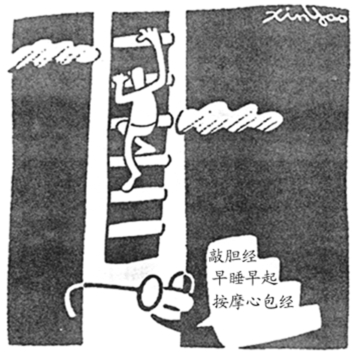
每天一式三招，血气步步高。
这套方法只要持之以恒，使之成为日常生活的一部分，不需要有太多的食物禁忌，是一种最简单的养生方法。只要将这五件事经常铭记在心，血气能量必定经常处于上升的趋势，疾病将一天一天远离，长寿、健康、长葆青春是必然的结果。
这套方法不需要任何准备，就可以立即实施，只要试行一个月，即会发现身体的改变，可能精神或体力好些了，也可能体重略微增加，但人却精瘦些了。这是非常快速见效的一种方法。有些头发略白的人，试上1个月，就能发现白发停止增加了，3个月后白发开始减少。有些体力很差，经常很容易疲倦，到医院又查不出什么毛病的人，在试行了这套方法3～4个月后，体检时就可能出现血糖升高的糖尿病症状，这些都是好转的现象。至于糖尿病的问题，我们在慢性病的调养篇中会介绍其成病的原因和调养的方法。
就算不能严格实施这种生活方法，只要能接受这个观念，生活习惯自然会慢慢改正，至少不会再任意透支血气能量。许多朋友接受了这个观念之后，到了该睡觉的时间，会互道“回家养血气吧”。有时候不得不透支几天的体力，也会找机会好好补睡回来。当自己连续几天不正常的生活之后，都会不由自主地产生罪恶感，自动就纠正回来，只要到这个地步，身体就不容易坏到哪里去了。
敲胆经直接就会使臀部和大腿外侧的脂肪减少，大约一至两个月就会感觉裤管变大了。
敲胆经
敲胆经（图十一）
如图，每天在大腿外侧的四个点，每敲打四下算一次，每天敲左右大腿各五十次，也就是左右各两百下。由于大腿肌肉和脂肪都很厚，因此必须用点力，才能有效刺激穴位。敲胆经主要在刺激胆经，强迫胆汁的分泌，提升人体的吸收能力，提供人体造血系统所需的充足材料。
由于敲胆经可以使胆经的活动加速，将大腿外侧堆积在胆经上的垃圾排出，因此，敲胆经直接就会使臀部和大腿外侧的脂肪减少，大约一至两个月就会感觉裤管变大了。
患有脂肪肝和胆结石的人，这个方法是最简单而且最有效改善健康的方法。
在“人体的系统”章节中，说明人体的能量和血液总量成正比。自然界创造人体时，必定提供了人体良好的造血系统，在正常情形下每一个人应该都能造出足够的血液。当人体出现能量下降的趋势时，必定是人体某一个部分受到阻碍。因此，找出造血系统不能生产足够血液的原因，再予以排除，使人体能够正常造出足够的血液，就能使人体的能量供应呈现上升的趋势。
很多人身体力行地奉行本书中的一式三招及健康观念，健康真的就这么得到了。
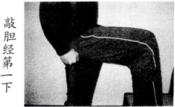
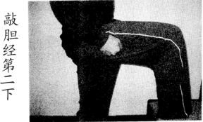
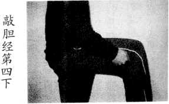
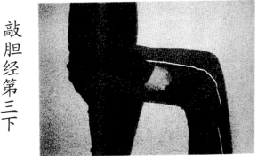
图十一 敲胆经
血气能量就像电器产品的电能一样，是健康最重要的基础。
血气能量就像电器产品的电能一样，是健康最重要的基础。人体造血有两个最重要的条件，其中之一是需要人体准备足够的材料，血才造得出来。
胆汁是从肝脏中分泌出来的，胆囊则是储存及控制胆汁分泌的器官。人体吃进去的食物，有一部分是由胆汁的化学作用，分解成人体造血所需要的各种物质。因此，如果胆汁分泌不足，则食物被分解成可供人体吸收的物质就不够，当然也就不能提供人体造血所需的足够材料了。
造成胆汁分泌不够的原因，主要是现代人对感冒的处理方法上发生了问题。现代人由于长期使用西药，在感冒的处理上，主要是针对疾病的症状，采取压制的手段，而不是真正的把风寒排出体外。经常是利用特效药将症状压下去，症状是消除了，但是引起感冒的风寒却留在体内。
胆经是一条从头到脚的经络，其中大腿外侧是最容易被寒气侵入的部位，也是胆经最容易积存寒气的部位，由于寒气的积存会使这个部位的经络流动不通畅，因而使这个部位附近的组织所排泄的废物难以排出，长时间累积的结果，自然使得整条胆经都不畅通，胆的机能也就难以正常运行。同时这段胆经敲打起来最为顺手，因此建议每天适当地敲打胆经。
敲胆经会直接刺激胆汁的分泌，这是治标的方法，没有立即解决胆或肺的问题，只是直接刺激胆经强迫胆汁分泌，使人体能够生产足够的造血材料，血气便能逐渐上升。
肺和胆的问题必须等到身体的血气很高才能完全解决，那需要很长的时间。因此建议最好将这个运动养成终生奉行的习惯，每天只要10分钟不到就可以完成了。
胆功能不好的症状很多，最明显的就是白发。这是由于人体的能量不足所致，中医有一句话：“发乃血之末”，由于营养供应不足才会造成白发。油性头发也是另一种症状，这是由于胆汁分泌不足，无法有效分解吃进去的油脂，加上肝热的因素，就从头发排出油了。
敲胆经是最佳的进补方法
早期人类的运输工具不发达，特别是没有运输食物的冷藏设备，多数人终其一生，只吃居住地周围二三十公里范围的食物，每一个人都或多或少有些偏食的问题。因此，在那个年代的医生，最重要的就是让患者吃到一些平时吃不到的食物，药物和进补在那个时代能够发挥很大的治病功效。几千年下来，人们的经验累积，使得多数人一生病就会想到必须吃药或进补。
对多数现代人而言，与其经常进补，还不如每天敲敲胆经来得对身体有益。
现代运输工具发达，多数人在吃的方面，无论多远的食物，都可以成为每天的日常菜肴。只有少数人有偏食的不良习惯，才会有营养的问题，多数人并没有因吃的食物不够而营养不良。
虽然现代人营养都吃进去了，但是由于胆功能不好，使得人体的吸收能力很低，吃进身体的食物常常因为无法吸收而直接排出，在这种情形下吃再好的补品也是没有多大作用的。
不同时代的人，疾病的形态不同，进补的方式也不一样。从现代人的食物来分析，问题并不是现代人缺少了什么，而是吃进去的食物能不能被吸收。因此，生病吃药或进补并不是完全必要。对多数现代人而言，与其经常进补，还不如每天敲敲胆经来得对身体有益。
早睡早起
前一节敲胆经的功课，使人体可以生产足够的造血材料，这一节正确的睡眠则提供人体足够的造血时间，两者俱全，人体的造血机能就能够正常工作，血液总量就会逐渐增加，血气能量也就逐渐提高了。
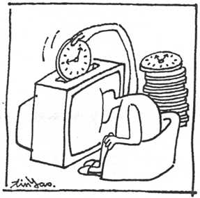
看电视所用掉的大多数是造血时间。
有了足够的血气之后，不但能改善人体的肥胖状态，还能使皮肤的新陈代谢加快，皮肤会愈来愈光滑，肤色也会愈来愈健康。血气够了，皮肤就会出现血色，脸上自然会呈现白里透红的气色。同时嘴唇也会自然红润。血气提升之后，脑部的供血增加，使人更聪明，反应更快。无论读书或工作，都会更得心应手。
“早睡早起身体好”是我们从小就被反复教导的良好生活习惯，可是现在每当建议朋友晚上最好10点钟睡觉时，90％的朋友的回答都是：“那怎么可能？”只有那些已经得了不容易医治疾病的朋友，才会排除万难，勉强实施这个从小被教育的生活习惯。
人体造血的最佳时段，是从下午天黑之后到午夜一点，而且必须达到深度睡眠的状态。因此，建议每周至少保持午夜12点以前，累计有8个小时睡眠。
“日出而作，日落而息”是远古以来人类的生活习惯。几万年来，由于没有电力，夜间几乎无法活动。近代电灯的发明，加上电视和计算机的出现，以及夜生活愈来愈丰富，睡觉的时间愈来愈晚。古时候，“三更半夜”是形容很晚的深夜，除了少数作奸犯科的坏人以外，一般人几乎很少在这个时候还在活动的。但是现代的多数人几乎都是不到“三更半夜”不上床。
正常的睡眠提供人体足够的造血时间，将吃进去的养分转化为人体可以储存及使用的血液或其它形式的物质。
汽车在使用一段时间之后，必须进行加油和保养。同样的，人体也是在使用了一段时间之后，在休息时进行加油和保养。人类早期，并没有电灯，在天黑以后，一定进入睡眠状态，和目前多数的野生动物一样。因此，这些加油和保养的工作，必定排在夜间人体睡着之后进行。而时间的控制很可能就用太阳的磁场变化来作为定时的控制装置。“日出而作，日落而息”是人类的最原始作息方式，任意修改这个作息方式，必定会为健康带来重大的影响。
正常的睡眠提供人体足够的造血时间，将吃进去的养分转化为人体可以储存及使用的血液或其它形式的物质。根据我们的经验，如果每天晚上11点睡，加上前一章的敲胆经改善营养的吸收，血气至少可以保持平衡，而且有很少部分的余蓄，如果10点睡，就可以使人体的血气形成上升的趋势。
由于血气能量可以用血液形式存于人体内，可以储存也可以透支。因此当我们有时候不得不有一两天晚睡时，可以在其它的日子里早点睡，把不足的睡眠补回来。
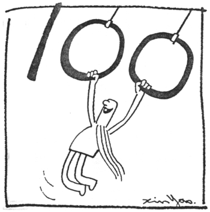
百岁老人三字经：
敲胆经，
早睡觉，
压心包，
不生气，
肠干净。
睡眠时间不对是现代人生病的最主要原因之一，对于这个原因所造成的疾病，也只有在正确的时间里将不足的睡眠补回来一途，没有任何药物可以替代。
当做到敲胆经和早睡早起的功课后，人体的血液会很快增加，这些血液会充盈于人体的脏器，人的体形不一定会变胖，但是体重一定会增加。
原来血气能量很差的人，依照这种方法调养，有可能在1个月内增加1公斤左右的体重（增加的重量主要来自于增加的血液）。这是人体血气能量提升，走向健康的一种现象，并不需要因体重增加而放弃了这个方法，这部分的重量增加和肥胖并没有直接的关系。
因此，建议读者在开始利用这本书所提供的方法之前，先量量身体某些部位的尺寸（那些您担心发胖的部位），等体重升高后，再来作比较。了解到底增加的是内部的血液或者是外部的脂肪，不要受到体重计的愚弄。
按摩心包经
心包经（图十二）
在心包经的穴位进行按摩，在图中所标示的位置附近寻找穴位，找到了穴位，稍用力压就会感到明显的痛感。每天在每个穴位按摩2～3分钟。
多数慢性病，是我们错用了身体的结果。我们需要的，不是灵丹妙药，而是一本正确的人体使用手册。

图十二 心包经
心包经在中医里是一个独立的经络，许多病症都和这个经络有关。
除了心包经之外，应再按摩任脉的膻中穴（图十三）和膀胱经的昆仑穴（图十四），其中昆仑穴的按摩应在按摩心包经之前实施，这样比较容易将过多的心包积液排出。
这个方法最主要的功效，在消除心脏外部的心包积液，解除心脏所受不必要的压迫，使心脏的正常功能得到发挥，有能力将血液输送到身体各个部位，将堆积的废物带走。
过多心包积液的去除，可以减少许多人体的不舒适，例如胸闷、心悸、呼吸不顺畅、手脚无力、肩背酸痛、心律不整等，这是最快见效的方法。这个方法可以提升人体的免疫力，感冒发烧时，配合其它穴位的按摩，是最好的退烧方法，特别是小孩发烧，又不想服用太多药物时，这是最好的选择。
心包经在中医里是一个独立的经络，许多病症都和这个经络有关。从解剖学来看，心包是心脏外部的一层薄膜，和心脏之间有部分体液，作为心脏和这层膜之间互动时的润滑剂。
在某些情形下，会使这些体液增加，使得心脏的活动受到影响，心脏泵血的能力也就减弱了。供给到身体各个组织的血液也相对的减少，是肥胖形成的主要原因之一，因此，按摩这个经络是减肥首要的工作。
很多人身体力行地奉行本书中的一式三招及健康观念，健康真的就这么得到了。
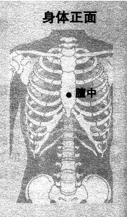
膻中穴
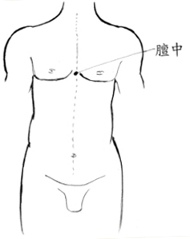
图十三 膻中穴，在两乳头连线的中点。
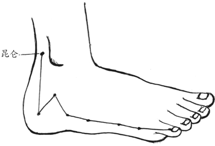
图十四 昆仑穴属膀胱经，在足部外踝后方凹陷处。
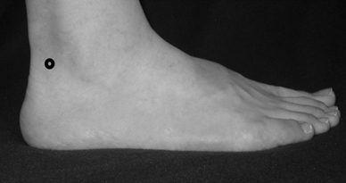
从中医五行理论，心属火，脾属土，火生土。心脏的能力提升，也能够同时强化脾脏的能力。脾脏是人体免疫系统最重要的器官，因此按摩心包经可以提升人体的免疫能力。多数疾病，按摩这条经络都能对身体有很大的帮助。
心包积液的形成，主要是身体中出现了疾病，脾脏将主要能力用来和疾病对抗，就将运水的工作暂时搁置，心包中的废水就积了下来。由于人体多数的维修工作都在夜间睡眠时进行，因此，多数的积液情形会出现在早上，通常到下午就会退去。
但是当疾病严重时，人体会不停地和疾病对抗，这时积液就会长时间不退，使得心脏的机能减低，脾脏对抗疾病的能力也跟着下降，进一步恶化心包积液的情形，形成了恶性循环。这时人为的按摩心包经可以快速将心包膜中的积液排除，提升心脏的能力，帮助脾脏打赢这场战争。
按摩这个经络的穴位时，在人体胸前肋骨的下方（如图十五），可以听到流水声的变化。在按摩前先听其声音，按摩穴位时再持续监听，就能比较其差异。经络不通时这个部位是没有声音的，按摩一段时间就能听到一些液体流动的声音。
很多人身体力行地奉行本书中的一式三招及健康观念，健康真的就这么得到了。
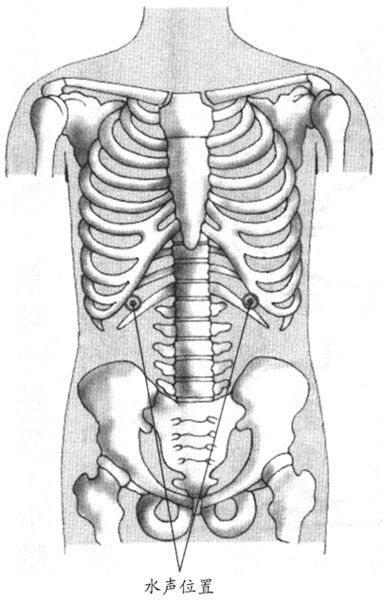
图十五 按摩心包时听水声的位置
简化的按摩方法
虽然整条经络的按摩，能够得到最好的效果，但是在日常生活中，有时并不能坐下来好好地按摩。而身体又正好不舒服，例如，晕车或晕船时，或平常突然感到胸闷、气喘不过来，手脚无力等。这时先按摩两脚膀胱经上的昆仑穴，再按摩胸口任脉的膻中穴，就能很快使症状得到缓解。
不生气
不知道从什么时候开始，中国人把发怒说成“生气”，从小到大一直用这个名词。学了中医之后才晓得原来人一发怒，真的会在体内产生往上冲的“气”，严格说来“生气”根本就是一个中医的名词。
不单是人会生气，多数的动物也会生气，动物生气之后接下去就是打斗，因此，生气是打斗之前身体的准备动作。身体透过“生气”调整内分泌，使身体达到打斗时的最佳状态。
动物的生气有点像一个国家的备战一样，当一个国家面临战争威胁时，会立即进行备战，将大量的资源投入战争的准备中。一旦战争威胁消失，这些投入的资源多数成为废物。就像前苏联解体之后，必须花费很大力气处理各种洲际飞弹和坦克一样。
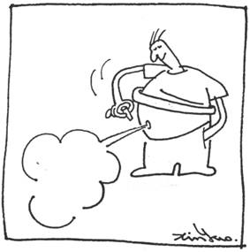
发怒时身体会产生气，所以称之为生气。
动物的生气和国家的备战一样，身体将许多资源进行调整，让身体的配置进入战斗的预备状态，准备应付接下来的战斗。一旦状况消失，这些调整的资源就成了废物，必须排出体外，或花费力气将之改变回来。因此，生气就像国家的战争一样，会大量消耗资源，非常浪费身体的血气能量。
《黄帝内经》灵枢篇中对疾病的原因有一段说明：“夫百病之所始生者，必起于燥湿寒暑风雨，阴阳喜怒，饮食起居。”我们的老祖宗很早就明白生气是最原始的疾病根源之一，不但浪费身体的血气能量，更是造成人体各种疾病的一个非常重要原因。
和多数的疾病一样，长期生气会在人的身上留下痕迹。从外表看经常脾气火暴、处于发怒状态的人，多数会造成秃头。严重的还会使头顶的形状改变，头顶中线拱起形成尖顶的头形。生气的程度轻一点的，则会在额头两侧形成双尖的M字形的微秃，这种人脾气一定急躁。
从中医的角度来分析，发脾气时，肝气会往上冲，直冲头顶，所以会造成头顶发热，久而久之就会形成秃头。严重的暴怒，有时会造成肝内出血，更严重的还有可能会吐血，吐出来的是肝里的血，程度轻一点的，则出血留在肝内，一段时间就形成血瘤。这些听起来很可怕，可是却是真实的情形。
所谓的生气并不单指发出来的脾气，有些闷在心里的生气也会对人体造成伤害。
所谓的生气并不单指发出来的脾气，有些闷在心里的生气也会对人体造成伤害。生闷气会使得气在胸腹腔中形成中医所谓“横逆”的气滞。妇女的小叶增生和乳腺癌很可能都是生闷气的结果，而且多半是生异性伴侣的闷气。
另外一种情形是有气无处发的窝囊气，这种人外表修养很好，好像从来不发脾气，其实心里经常处于生气或着急的状态。这种人也很容易形成横逆的气滞，造成十二指肠溃疡或胃溃疡，严重的会造成胃出血。这样的人，额头特别高，也就是额头上方呈半圆形的前秃，是最大的特征。发病时鼻翼两侧会出现红晕，略红时仅是溃疡，非常红时就可能出血了。
从中医的五行理论，认为肝属木，脾属土，木克土。肝气太盛时会使脾脏也跟着旺起来，如果血气很旺盛的年轻人，这时会产生许多白血球，去处理肠胃的问题，很可能一些年轻白血病患者的真正病因根本就是来自生气。
生气会造成肝热，相反的，肝热也会让人更容易生气。从中医的观点，怒伤肝，肝伤了更容易发怒，两者会互为因果而形成恶性循环。这种恶化会愈来愈严重，也愈来愈难改变习气。最终只有这个人大彻大悟，真正下决心彻底改变时，才有机会回头。
日常保养的第一件事就是要求“不生气”。
这是上帝设计用来修炼人性的方式，几乎所有的习气都是类似的逻辑。例如，悲伤肺，肺伤了更容易悲；忧伤脾，脾伤了更容易忧，就走上忧郁症的死胡同里。
当人体长期透支体力，使血气下降到阴虚火重的水平时，由于这时的人体使用的能量是透支的“火”，肝必定比较热，肝火也比较旺，人就很容易生气。因此，调养血气，使血气上升超越阴虚的水平，也会使人的脾气变得比较平和。
暴怒也会造成肝热，继而使肺也跟着热起来，就会造成严重的失眠，我们曾经遇到一个五天五夜无法成眠的人，就是生气造成的。
在医院中身体虚弱的病人，有时候一生气就会造成生命的危险。例如，痰比较多的病人，一旦生气，会使痰上涌，造成严重的气喘，一不小心就窒息死亡。
由于生气会使身体造成许多问题，因此，日常保养的第一件事就是要求“不生气”。所谓的不生气并不是把气闷住，而是修养身心，开阔心胸，或者寻求一种宗教信仰，使得面对人生不如意时，能有更宽广的心胸包容他人的过错，根本没有生气的念头。如果生活或工作的环境让人无法不生气，那只有转换环境一途。
最简单的消气办法则是用热水泡脚。
生气是一个人内发的因素造成的，再好的医生也无法防止病人生气，因此，这个问题只有病人自己修养才有机会克服。
医生只能在病人生气之后，设法将生气造成的伤害减到最低。做法是按摩或用针灸肝经。最简单的方法，就是生了气后，立刻按摩脚背上的太冲穴（图十六），可以让上升的肝气往下疏泄，这时这个穴位会很痛，必须反复按摩，直到这个穴位不再疼痛为止。也可以在生气的当天找一个针灸医生，在太冲穴扎针，隔两天再扎一次，直到这个穴位按起来不再痛，头顶也不再发热为止。或者吃些可以疏泄肝气的食物，如陈皮、山药等，也很有帮助。最简单的消气办法则是用热水泡脚，水温控制在摄氏40～42度左右，泡的时间则因人而异，最好泡到肩背出汗（在室温摄氏25～28度），有的人需要半小时，血气低的人有时要泡两个小时。
如果由于生气而在肝里留下了血瘤，那就需要很长时间的保养，当血气能量很高时，身体才会开始处理这个问题。
一些朋友明白了生气会有这么严重的后果，就再也不敢生气了。生气的实质意义是“用别人的过错惩罚自己”，是人类最愚笨的一种行为。因为生气造成死亡的人，中国人称之为“气”死的，其实也是真正“笨”死的人。
很多人身体力行地奉行本书中的一式三招及健康观念，健康真的就这么得到了。
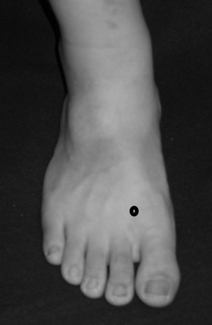
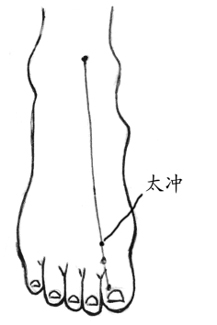
图十六 太冲属肝经，在足背部，当第一趾骨间隙之后方凹陷处。
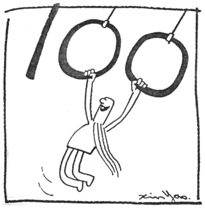
百岁老人三字经：
敲胆经，早睡觉，压心包，
不生气，肠干净。
以目前医学的诊断方法，很难定义病人的疾病是由于生气造成的，也许将来有一天，可以做到这一点。到时候人们将会发现，生气很可能是人类最主要的死亡原因之一。
佛经说：“世人多愚昧。”一点都没错，大多数的人是笨死的。
保持肠胃的清洁
肠胃的问题和多数的慢性病有密切的关系。许多严重的疾病，追根究底找寻原因，多数都是源自于肠胃的问题。例如，鼻咽癌、淋巴癌、皮肤癌、肌无力、痛风等。
在日常生活中随处都能见到肠胃有问题的人，例如长不高的人、肥胖的人、大腹便便的人、很容易长粉刺的人、下嘴唇肥厚的人、容易流口水的小孩等等，都是肠胃受到较严重感染的症状。
这些感染主要来自两个来源，一个是来自唾液的感染，另一个是食用不清洁的食物。
防止唾液的感染
有一种说法，小孩初生时，由于还有母亲的抗体，所以不太会生病，也不太会拉肚子，6个月之后，慢慢的这些抗体失去了效用，就开始愈来愈多病，也开始拉肚子。小孩经过一段时间的疾病的历练，慢慢地会培养出抵抗力来。
从这个说法演变下来，就有些人认为小孩吃东西太注重卫生，会使小孩没有抵抗力。“不干不净，吃了没病”是中国人的一句俗话，就是这种想法。
其实小孩在初生时，主要是吃奶，和成人的食物完全不同，当然也完全隔离，受到感染的机会很少。但是6个月之后，开始接触成人的食物，也许是喝喝汤或一些流质的食物，这时就开始和成人接触，很可能使用成人用过的餐具，受到成人唾液的感染。成人口中有上千种不同的细菌，由于是一点一点慢慢累积下来的结果，在成人体内已经形成一个平衡的状态，虽然实际上充满了细菌，表面上看起来并没有疾病的症状。但是几乎完全洁净的婴儿突然接受这么多的细菌，立刻造成很大的问题。
再大一些的孩子，长出了牙齿，可以吃的东西更多，开始和成人共桌吃饭，感染的机会也就更多了。特别是一些长得可爱的孩子，到左邻右舍串串门子，大人都会拿些吃的东西给他，有时候甚至是大人吃了一半的东西，就给他吃。孩子完全暴露在成人的唾液感染环境中。
感染的初期由于人体仍有强大的抵抗力，细菌一进入体内立即引发人体的防卫系统和细菌之间的大战，随即出现拉肚子甚至发烧的症状。这时由于症状激烈，大人们就以为孩子的身体不好，抵抗力不够。
随着感染次数的增加，身体的血气愈来愈差，抵抗力也愈来愈低，最终失去了抵抗能力，任由细菌长驻在体内，也就不再拉肚子了。这时不再出现有感觉的症状，开始出现流口水，发胖等没有感觉的症状，大人们就以为孩子的抵抗力增强了，可以抵抗这个世界的恶劣环境。
从表面上看，常常拉肚子，大家都认为是抵抗力不好的现象，不常拉肚子，是肠胃好的现象，实际上却是完全相反的结果。这类肠胃细菌的感染，最大的问题是当人体失去抵抗力后，再受到感染时，身体不再抵抗就不会有任何不舒服的症状，完全没有感觉，可是细菌却在体内不断增长，这些细菌会消耗人体大量的血气能量。直到有一天人体血气能量枯竭，才会以其它形式的疾病出现症状，这时距离最早的感染时期，很可能已经是20～30年或更久以后的事了。
洁净肠胃的第一件工作，就是改变饮食习惯，推行公筷母匙的饮食方式。
成人的唾液中含有大量的细菌，不但会对小孩的身体造成非常大的伤害，也会对成人造成伤害。中国人的饮食习惯是一家人共同在相同的餐盘中挟取食物，这是非常不卫生的。因此，洁净肠胃的第一件工作，就是改变饮食习惯，推行公筷母匙的饮食方式，特别是有小孩的家庭，这是保护儿童不受成人唾液感染的最基本条件。
当肠胃中有细菌感染时，每一种不同的细菌会在人体特定的部位驻留，当肠胃中有细菌驻留时，会在经络上相应的部位造成阻塞，时间长了，就会形成垃圾的堆积。通常经过长期相处，相同一家人的身上都会拥有相同种类的细菌，经络上就会在相同的部位堆积垃圾，慢慢的即便是没有血缘关系的亲人，长相也会愈来愈像。
有些人可能会认为血缘关系是造成长像相似的主要原因，但是经常都可以发现没有血缘关系的养子或养女，也和养父或养母愈来愈像。更常见的是一对夫妻，共同生活久了，就会愈来愈像，人们称之为夫妻脸。就是因为肠胃中有愈来愈多相同的细菌，造成多数阻塞经络的位置愈来愈相似，脸面上垃圾的堆积情形也愈来愈相近，长像就愈来愈像了。说穿了，夫妻脸是代表夫妻体内有相同细菌的病相，一点都不罗曼蒂克。
生的动物性食物，是人体另一个细菌感染的来源。
不吃生的动物性食物
生的动物性食物，是人体另一个细菌感染的来源，例如生鱼片、半生不熟的牛、羊肉、醉虾、醉蟹、没煮熟的蜗牛或田螺、黄泥螺等。
和人体唾液的感染相同，这些细菌在感染初期，如果人体有足够的血气，会出现拉肚子或其它的症状，但是一段时间之后，人体失去了抵抗力，对这些食物不再有任何反应。这种现象有些人认为是身体经过了这些锻炼，抵抗力增强了，所以能够抵抗这些细菌。也有些人根本认为这些食物很干净没有细菌。这两种人多数会继续食用，细菌在体内长期继续繁殖，直到人体崩溃为止。
和人体的唾液感染相同，这种细菌的感染，从感染到发病通常需要数10年的时间，等到发病时，无论如何都无法和这些食物联想在一起，多数都认为吃了几十年都没事的食物，不可能会有问题的。
“砭”指刮痧和按摩的物理治疗方法，是四种方法之首。
更有人认为日本人吃了生鱼片，几百年都没有问题，而且日本是先进国家，日本人又有洁癖，他们吃了都没事。殊不知日本人早期之所以矮小，很可能就是由于长期吃食生鱼片的习惯所致。今日日本人肠癌、肺癌、鼻咽癌都偏高，这些癌症都和肠胃的感染有密切关系。
肠癌当然直接就长在肠子里，肺癌中有很大的一部分是在肺部前方的位置长了肿瘤或癌细胞，这个部位从中医的经络来看，是长在大肠经别的部位，很可能也是大肠长期感染引起的。鼻咽癌的情形和肺癌类似，长异物的部位也是大肠经经过的部位，这些癌症都和大肠的感染脱不了干系。
肠胃是人体对食物的第一道警戒线，当人体吃进了不洁的食物时，最好的策略，就是把这些食物和细菌用拉肚子的形式排出体外。当一个人很久都不再拉肚子，并不是他的肠胃很好，而是已经麻木了。
中医的各种治疗手段
传统中医的治疗手段，在古书中的记载是分为砭、针、灸、药四种方法。“砭”指刮痧和按摩的物理治疗方法，是四种方法之首，可见是各种方法中最重要的方法。除了“砭”的治疗效果可能特别好以外，由于它完全不需要特别的材料和工具，只要一双手或简单的刮痧板或瓷汤匙，甚至扁平光滑的石头就行了。只要懂得医理，随时随地都能为人治病，是最方便的医疗方法，因此被古人将之列为各种治病方法之首。药为四种方法之末，主要可能是这种方法需要各种不同的药材，不是随时随地都能具备的，因此被列为治疗方法中的下策。
一个好的中医应该精通这些方法，视实际需要及资源状况，选择最好的方法为人治病。但是由于“砭”的治疗方法，医生最耗体力，也最耗时间，最不容易赚钱，动手动脚的像在干粗活一样，形象并不是很好。而开方取药，不但能用最少时间、最少体力为人看病，也能维持医生专业权威的形象。同时在药材上也比较容易抬高价格，可以使医生获得较大的经济利益。
多年演变下来，最终“以药为主”的治疗方法成为中医主流，而各种“砭”的手段却沦为民俗疗法，正牌的医师不屑为之，中医的功效也大打折扣。有些以“砭”治疗为主的疾病，就成了今天的不治之症，例如，重症肌无力（台湾所称“渐冻人”，或神经元疾病）是最好的例子。
重症肌无力最早的成病原因多半是肠胃的细菌感染，加上血气低落，使得脾脏的能力低下，无法清除人体的废水，形成了心包积液长期过多，心包经长期阻塞，心脏能力长期低落。心脏是人体血液的泵，泵的能力不足，血液长期没有能力进入肌肉组织。没有血液的肌肉自然没有力量，没有血液中营养的供养，肌肉逐渐演变成萎缩的症状，就形成了严重的疾病。
每天一式三招，血气步步高。
多数这种疾病的患者，都由于长时间的心包积液，使心脏外侧堆积了太多的垃圾，形成一层厚厚的油脂，现代医学称之为心肌肥厚。这些堆积的垃圾需要不断地清除，才能使之慢慢减少。
清除这些垃圾，当然首先需要身体具备足够的血气能量，因此，敲胆经和早睡早起是最重要的手段。当身体休养生息时，可以同时按摩心包经，使心包积液迅速清除，新的垃圾不再堆积，同时也能带走部分旧的垃圾。
这就是本书中的一式三招的养生方法，只要不断地重复这一式三招，有机会使心脏外侧的垃圾清理干净，当然就有机会使肌肉的机能再度恢复。